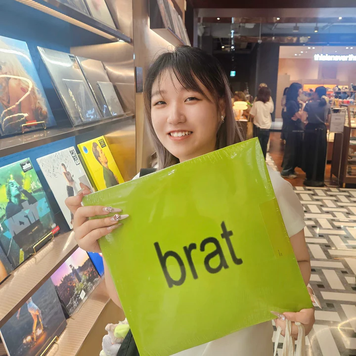
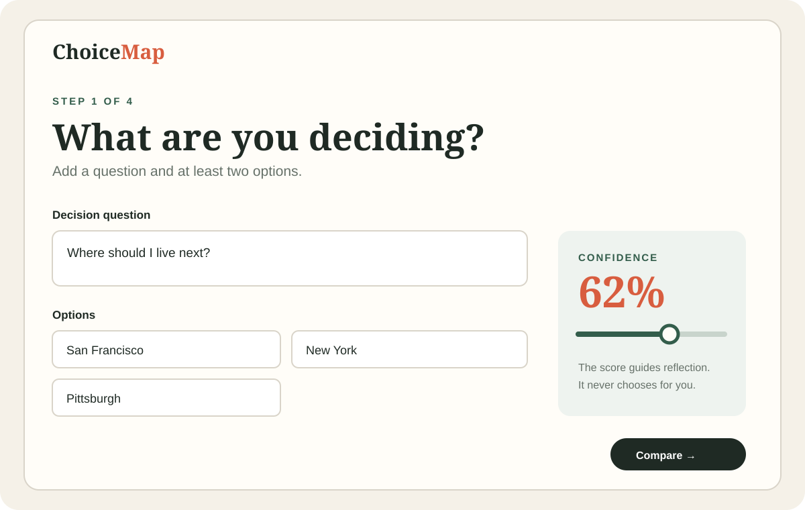
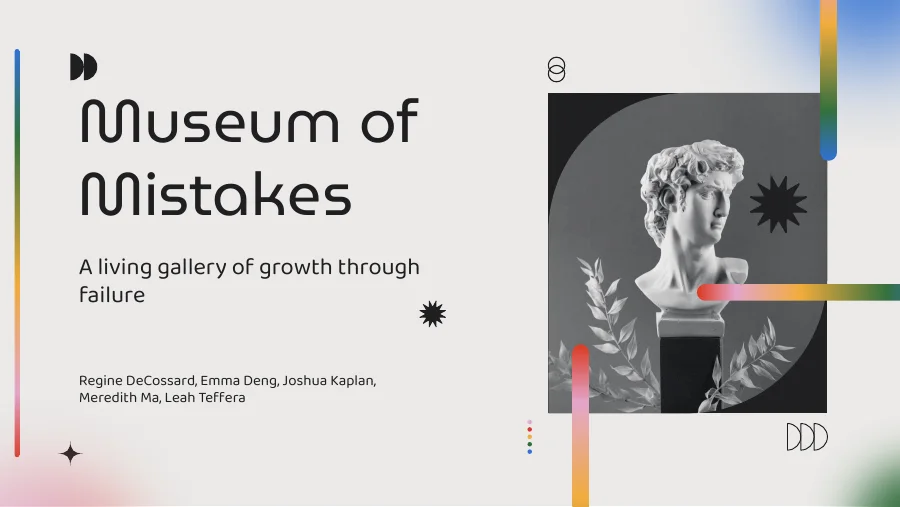
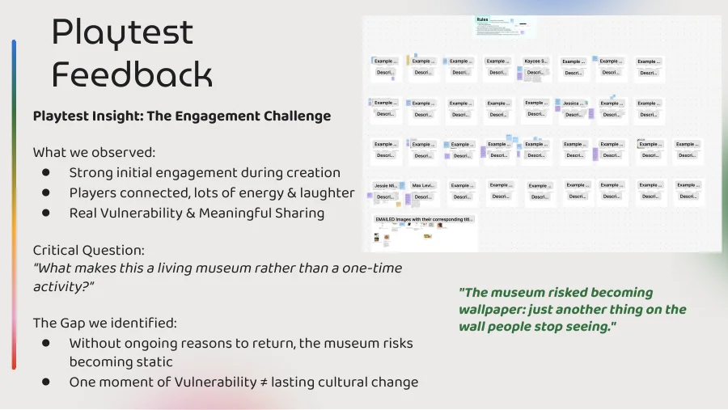

01
Shipped MVP
ChoiceMap
A decision journal for comparing options, examining assumptions, and reviewing outcomes later.
Software engineer × cognitive scientist × interaction designer
I build software and research experiences around decision-making, memory, language, attention, and everyday behavior.

01 / About
I’m Meredith, a Carnegie Mellon Cognitive Science graduate who likes working between engineering, research, and product design.
I care about calm interfaces, low cognitive load, ethical data practices, and tools that leave room for human judgment. My projects move between Swift, Python, AI/ML, Unity, qualitative research, and playful physical prototypes.
02 / Software + product
Privacy-conscious macOS and web tools that support reflection without replacing human judgment.
A decision journal for comparing options, examining assumptions, and reviewing outcomes later.
A private Mac space for personal objects, daily notes, memories, and small experiments.
View repository ↗A visual diary that turns each day into one color and one optional word.
View repository ↗A private app for sending thoughts to your future self and meeting them again at the right time.
View repository ↗03 / Interaction design + UX
Digital, physical, and immersive experiences shaped through prototyping, playtesting, and iteration.


04 / Selected case studies
Two projects showing how I frame a problem, reduce complexity, test assumptions, and turn insight into a usable experience.
Independent product · 2026

Important decisions often become exhausting because options, feelings, risks, and assumptions are held in memory at once.
Independent product designer and developer across scoping, interaction design, implementation, and testing.
I reduced the flow to four calm steps: frame the question, compare optional criteria, reflect on possible biases, and record a choice.
A working Flask and SQLite MVP that requires only a question and two options while leaving every deeper prompt optional.
Flask · SQLite · HTML/CSS · Decision-making · Cognitive load
View code ↗Participatory experience · Team project · 2026


Students new to HCI can experience failure as isolating, while power dynamics make open discussion feel risky.
Co-designer and playtest researcher on a five-person team developing the activity, materials, and iteration strategy.
Participants anonymously create artifacts about mistakes, explore a shared gallery, and respond through reflection and playful curator cards.
Testing revealed that the gallery could become static, so we designed phased revelation and ongoing commentary to create reasons to return.
Participatory design · Facilitation · Behavioral design · Playtesting
Back to design work ↑05 / AI + cognitive research
Projects connecting language, perception, collective memory, professional identity, and multimodal AI.
Compared archival and AI-generated images using CLIP, UMAP, BLIP captions, and keyword analysis.
Compared Mandarin and English color categories with mBERT and CLIP representations.
An exploratory qualitative study of language, professional identity, and belonging.
A community experience for intergenerational language and cultural connection.
Engineering foundations
06 / For fun
Personal studies in anatomy, observation, architecture, color, and imagined places. Select any piece to view it larger.